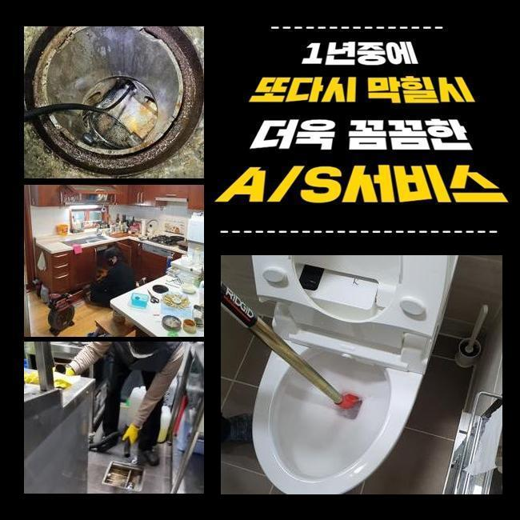
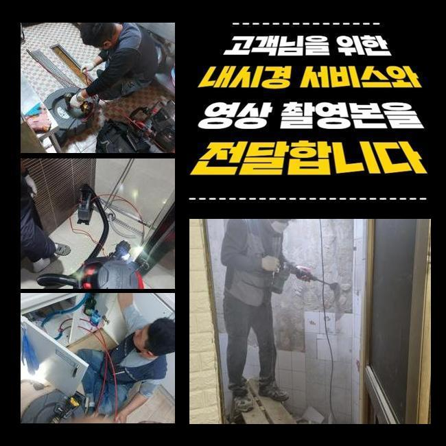
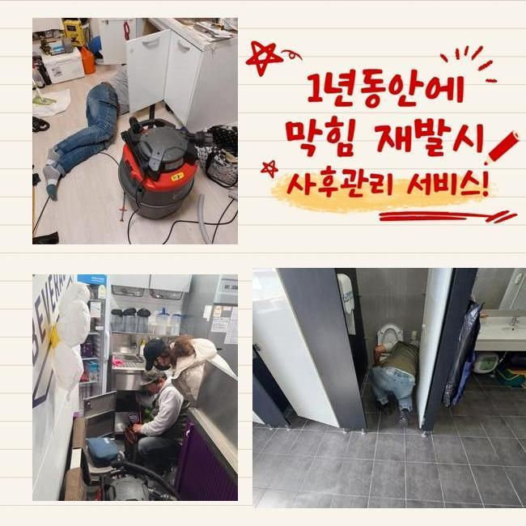
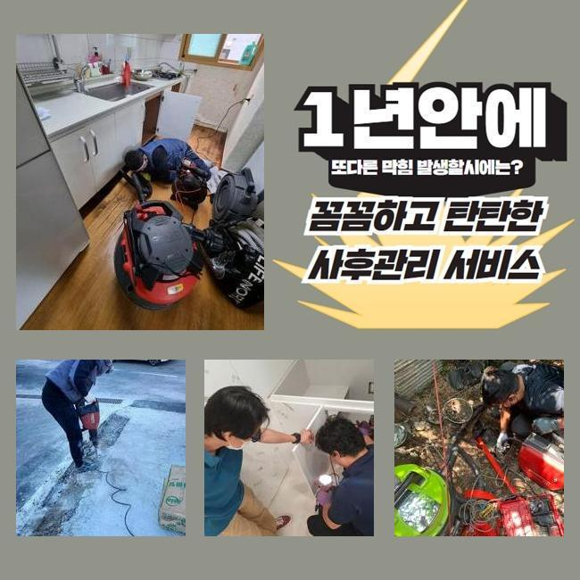
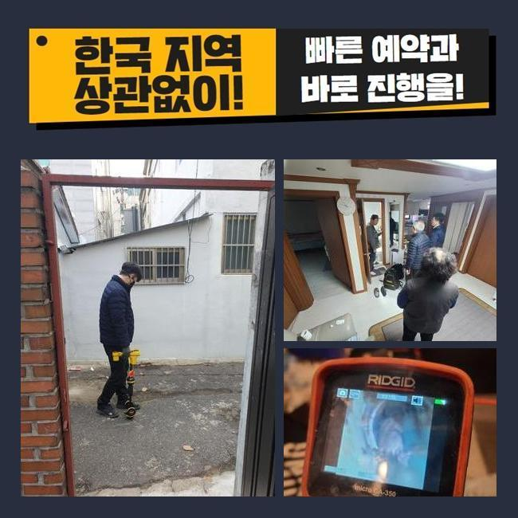

🏠 마포 아현동변기배관막힘 서교동 하수구뚫는비용 누수탐지
서울 마포구 변기막힘 전문 시공 후기

📋 작업 개요
- 위치: 서울 마포구, 마포구, 서울
- 서비스 유형: 변기막힘, 하수구막힘, 배관막힘, 누수수리, 역류해결, 뚫는업체
- 작업 일시: 2025. 3. 15. 18:40
- 업체명: 하수구수사대 (010-5615-2118)
🔍 문제 상황
마포 아현동변기배관막힘 서교동 하수구뚫는비용 누수탐지
어제 배수관 역류사고로 긴급요청을 전달받고 알려주신 주소지로 달려갔습니다
의뢰인께서는 문제 상황으로 전화를 주신 것이고 저희 전문진은 신속정확하게 전문 기기를 챙겨서 현장으로 달려갔습니다
하수설비에 이상이 발생하면 실생황에 큰 어려움이 발생하므로 의뢰를 맡은 현장을 신속정확하게 처리해드리는 것이 제일 중요한 포인트입니다
현장으로 출동하여 일단 문제가 발생한 곳을 살펴봤어요
하수라인 막힘문제는 세탁실 안쪽에서 발견됐는데 물들이 아예 내려가질 않고서 역류하고있는 상황이였어요
의뢰인께서는 하수관 막힘사고를 해결 해보려고 다방면으로 시도 해봤으나 전혀 도움이 되질 못했고 결국엔 세탁 자체를 못하게 되는 상황까지 왔다고 말씀 하셨습니다
일반 가정에서 배수구가 막힌 것을 해결해보자 시중에서 팔고있는 관련 제품들을 사용해보시지만 막힘사고를 야기시키는 원인을 찾아내서 처리할 수 없습니다

🔎 원인 분석
💡 전문가 진단: 정밀 진단 장비를 사용하여 슬러지의 고착 여부를 판명하고 타격/세척 작업을 실시했습니다.
하수시설은 세월이 흐를수록 노폐물등이 쌓여서 문제가 발생하므로 막힘이 발생한 지점을 찾아내서 수리를 진행하는게 좋습니다
우선적으로 배수관 속과 외부 배관 체크를 했어요
배수관 막힘사고를 자세히 알아보려면 안쪽뿐만 아니고 모든 하수라인을 빠짐없이 살펴보아야해요
배수관은 가정에서 사용된 물등을 외부 배수관으로 흘려보내는 형태라서 막힘사고의 이유가 내부쪽에 있는지 외부의 하수관에 생긴건지 잘 살펴봐야합니다
전체적으로 확인해보니 바깥쪽 배수관 이물질들이 가득 쌓여 물이 잘 나오지 않고 있었어요
외부 배관쪽에서 문제점을 해결하려면 내부쪽과 외부쪽의 하수라인을 일괄적으로 처리합니다
내시경장치를 사용해서 하수라인 내부를 세밀하게 관찰합니다
내시경기기로 배수구 안쪽에 쌓여있는 침전물이 하수라인을 완전히 막아버린 모습들을 발견했어요

🔧 작업 과정
샤프트기계를 활용해서 하수라인에 쌓여있는 침전물을 제거하는 작업을 진행했어요
샤프트기는 회전하는 힘을 사용해 이물질들을 빠르게 제거하는 기기로 하수관에 달라붙은 단단하게 변형된 불순물을 파쇄하여 배출시키는 장비입니다
샤프트기기는 하수라인 내벽에 두껍게 층을 이룬 침전물을 분쇄하고 배수관을 깨끗하게 만들어줘요
배수라인의 막힘 정도가 심각한 상태라서 저희들이 오랜시간을 들여 하수라인 속에 붙어있던 슬러지를 완전히 제거했어요
크기가 작은 쓰레기는 시간이 지날수록 배수구에 쌓이면서 물이 빠져나가는 것을 지연시키므로 이처럼 이물질들이 안쌓이게끔 노력해야합니다
집의 안쪽 하수관에서 빼낸 슬러지가 다시 하수관으로 내려가지 않도록 거르는 작업까지 완료하고 하수라인을 최종적으로 점검합니다
이번엔 딱딱하게 변형된 이물질이 배수관을 막아버린 상황이였는데 시공을 완료한후 내시경기를 활용해서 하수관 내벽이 깨끗해진걸 볼 수 있었습니다
마지막 마무리까지 다하고 물을 틀어 계속적으로 내려보내며 배수적인 다른 문제점이 남아있는건 아닌지 통수검사를 실시했어요
배수관에서 오수가 아주 잘흘러가는 모습까지 체크하고 현장을 마무리를 할 수 있었습니다
의뢰인께서는 막힘사고 이후 오류가 처리되는 상황을 작업을 시작하는 순간부터 저희들과 함께하며 전과정을 직접 보셨어요
저희 전문가는 하수시설의 여러 오류문제를 신속정확하게 처리해드릴 수 있습니다
하수라인이 막히거나 역류하는 경우 생활 속에서 크고 작은 불편함이 일어날 수도 있기때문에 저희 전문진은 이러한 문제를 처리하고자 365일 준비 되어있습니다
이러한 배수구 막힘 사고는 단순한 배수의 문제들만이 아닌 위생같은 관념에도 영향을 끼치므로 신속하게 처리하시는게 좋습니다


✅ 작업 완료
만약에라도 누수가 밑에집으로 번져 손상이 발견된다면 윗집에서 영향을 준 문제점인지 알아보는 것이 우선이므로 전문적인 업체에 문의하여 확인하시는걸 추천합니다
저희 업체는 효율적이고 신속한 현장 방문으로 고객분께서 안심하시도록 작업을 진행하겠습니다
배수구 문제등으로 자세한 상담이 필요하시다면 언제라도 저희 업체로 전화주시면 친절하고 자세하게 설명 해드리겠습니다
하수설비의 이상이 발견된 경우 저희 전문 기술진에게 맡겨주시기 바랍니다


⚠️ 베란다 누수 및 방수 관리 방법
- ✅ 비가 많이 올 때 창틀 주변이나 아래층 천장에 얼룩이 생기는지 정기적으로 확인해 보세요.
- ✅ 우수관 주변 실리콘 마감이 들뜨거나 깨진 틈새가 있는지 손상 여부를 수시로 체크하세요.
- ✅ 베란다 바닥 타일의 줄눈(메지)이 소실되면 그 틈으로 물이 침투하여 누수가 유발됩니다.
- ✅ 누수 의심 증상 발견 시 방치하면 아래층 손실이 커지므로 즉시 전문가의 진단을 받으십시오.
💡 핵심 정리
- 확실한 장비 작업(내시경 점검 및 샤프트 스케일링)으로 원인을 뿌리 뽑습니다.
- 작업 후 1년 이내에 동일한 부위 재발 시 100% 무상 A/S 서비스를 보장합니다.
- 서울 · 경기 · 인천 전 지역에 24시간 언제든 긴급 출동할 수 있도록 항시 대기 중입니다.
❓ 자주 묻는 질문 (FAQ)
🚨 서울 마포구 변기막힘 문제로 고민이신가요?
정확한 원인 진단과 확실한 시공으로 재발 없는 해결을 약속드립니다.
24시간 긴급 출동 | 서울 · 경기 · 인천 전지역 | 1년 내 재발 시 무상 A/S